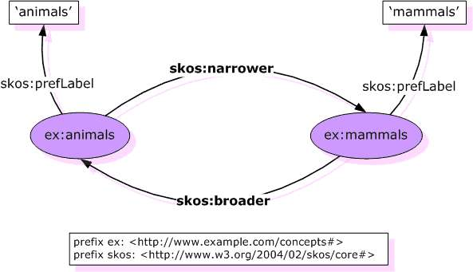

Ringraziamenti
- Questa presentazione è basata in gran parte
sul materiale di presentazioni tenute da Ivan Herman, W3C
Semantic Web Activity Lead
- Il materiale di questa presentazione può
essere riutilizzato nel rispetto delle leggi sul
copyright e delle regole del W3C
- Un particolare ringraziamento agli organizzatori di
Cultura
Senza Barriere 2010 per avermi offerto la
possibilità di tenere questo seminario
Contenuto
- Text retrieval e interoperabilità semantica
- Il Web Semantico: principi e tecnologie
- Searching the Web…
- Semantic Web: RDF, RDFS, ontologie, OWL
- Thesauri e SKOS
Il text retrieval
- La Naturalis Historia di Plinio il Vecchio
- In 37 libri
- Pubblicata nel 77 d.C.
- Il primo libro, pubblicato nel 79 d.C. dal nipote
Plinio il Giovane, contiene il sommario dei libri
successivi ed un elenco delle fonti per
ciascun libro
-
I primi metadati?
In principio fu lo scriptorium…

stat rosa pristina nomine, nomina nuda tenemus
…poi venne Gutenberg…
(http://upload.wikimedia.org/wikipedia/commons/b/b0/Gutenberg_Bible.jpg)
…e infine i calcolatori
- Anni 1960: i grandi servizi di Information Retrieval
- organizzazione dei dati diversa
- interfacce diverse
- Anni 1970: Euronet Diane e il CCL
- un protocollo di comunicazione unico
- Common Command Language: un insieme definito e
comune di campi informativi (AU, TI, …) e di
comandi (FIND, SHOW, …)
- Il protocollo Z39.50
- lavori iniziati negli anni 1970, con successive
variazioni nel 1988, 1992, e 1995
- protocollo client-server
- il profilo bib-1
- 1985: Dublin
Core
- 15 "Property"
- "qualifiers" (es. tipo e formato della data,
vocabolario utilizzato)
Dublin Core: la grammatica
Dublin Core: due esempi
- Specifica del tipo di data (revised) e del
formato (iso8601)
Resource has dcq:iso8601 dcq:revised dc:date
'200-06-13'
- Specifica del vocabolario controllato
utilizzato (Library of Congress Subject Headings)
Resource has dcq:lcsh dc:subject 'Languages --
Grammar'
Lo cerco sul Web…
Una versione semplificata di una biblioteca (Dataset "A")
-
Tabella Book
-
|
ID
|
Author
|
Title
|
Publisher
|
Year
|
|
ISBN 0-00-651409-X
|
id_xyz
|
The Glass Palace
|
id_qpr
|
2000
|
-
Tabella Author
-
|
ID
|
Name
|
Home page
|
|
id_xyz
|
Amitav Ghosh
|
http://www.amitavghosh.com/
|
-
Tabella Publisher
-
|
ID
|
Publisher Name
|
City
|
|
id_qpr
|
Harper Collins
|
London
|
Rappresentata come grafo …

Alcune osservazioni sull' esportazione dei dati
- Le relazioni formano un grafo
- i nodi individuano dati "reali" o contengono
caratteri ("literal")
- è inessenziale il modo in cui i grafi sono
rappresentati nella macchina
- L' esportazione dei dati non comporta
necessariamente una trasformazione fisica
- le relazioni possono essere generate
dinamicamente al momento della richiesta
- con SQL "bridges"
- scraping di pagine HTML
- estrazione di dati da fogli Excel
- etc.
- L' esportazione dei dati può essere
parziale
Un' altra biblioteca (dataset "F")
-
Tabella Livre
-
|
ID
|
Titre
|
Auteur
|
Traducteur
|
Original
|
|
ISBN 2020386682
|
Le Palais des miroirs
|
i_abc
|
i_qrs
|
ISBN 0-00-651409-X
|
-
Tabella Auteur
-
|
ID
|
Nom
|
|
i_abc
|
Amitav Ghosh
|
|
i_qrs
|
Christiane Besse
|
Secondo passo: esportare il secondo insieme di dati

Terzo passo: Merging dei dati
Terzo passo: Merging dei dati (cont.)

Merging delle risorse identiche

Le Query più semplici…
- L' utente dei dati "F" può ora formulare query
del tipo: "donnes-moi
le titre de l'original" o "give me the title of the
original"
- Questa informazione non è nel dataset
"F"…
- …ma può essere
ritrovata grazie al merging con il dataset "A"!
Sorpresi?
- Forse, ma in realtà no
- È esattamente quanto avviene normalmente a
tutti gli utenti del Web (ma in questo caso grazie a un
processo automatico)
- La differenza: è necessario un po'
più di rigore (per es. dare un nome alle
associazioni) perché le macchine possano
riuscirci.
- …e si può avere ancora molto di
più
In realtà cosa abbiamo fatto?
- Abbiamo combinato dataset diversi
- ognuno di essi può provenire da un
qualunque sito web
- possono avere originariamente formati
differenti (MySQL, fogli excel, XHTML, etc)
- possono avere nomi diversi per le
relazioni (multilinguismo)
- Li abbiamo potuti combinare perché avevano
lo stesso URI (l' ISBN nell' esempio)
- Possiamo aggiungere conoscenza addizionale,
utilizzando terminologie comuni definite dalle varie
comunità
- Di conseguenza, è stato possibile identificare
e utilizzare nuove relazioni
E il Semantic Web?
-
Il Semantic Web fornisce le tecnologie per rendere
possibile questa integrazione
- (il quadro dovrebbe essere chiaro
alla fine di questo tutorial)
L' architettura del Semantic Web

-
Il Semantic Web …
-
- è un' infrastruttura basata su metadati
per poter svolgere ragionamenti sul Web
-
estende, non sostituisce il web attuale
-
I metadati sono:
-
- Informazioni, elaborabili automaticamente
(machine understandable)
-
vocabolari (ontologie) condivisi
- un data model condiviso
-
Gli standard tecnologici
-
…solo un aspetto tecnico
Elementi di RDF
Resource Description Framework (RDF) è per il
Semantic Web quello che HTML è stato per il
Web

Triple RDF
- Proviamo a formalizzare!
- abbiamo "collegato" i dati
- ma non basta collegare due informazioni, occorre
dare un nome al collegamento
- quindi le triple RDF sono: un un collegamento
etichettato (labelled connection) tra due
risorse
Triple RDF (cont.)
- Una tripla RDF (s,p,o) è definita in modo che:
- "s", "p" sono URI, cioè risorse sul Web;
"o" è un URI o un "literal"
- dal punto di vista concettuale: "
p"
collega, o mette in relazione
"s" e "o"
- si noti che vengono utilizzati URI per denotare i
nomi: per esempio, possiamo utilizzare
http://www.example.org/original
- ecco la codifica completa della tripla:
(<http://…isbn 6682>, <http://…/original>, <http://…isbn 409X>)
-
RDF è un modello generale per queste
triple (con un formato machine readable come RDF/XML,
Turtle, n3, RXR)
-
ed è tutto qui! (semplice, dopo tutto
 )
)
Triple RDF (cont.)
- Le triple RDF sono anche dette "triplets", o
"statement"
- Le risorse
s, p,
o vengono anche dette:
"subject", "predicate",
"object",
oppure
"subject", "property",
"object"
- Le risorse possono usare un qualunque URI.
Per esempio, possono denotare un elemento
interno a un file XML sul Web, non solo una
risorsa "completa":
-
http://www.example.org/file.xml#xpointer(id('home'))
-
http://www.example.org/file.html#home
- Le triple RDF formano un grafo orientato
etichettato, o "directed, labelled graph"
(è questo il modo migliore per considerarle!)
Un esempio semplice di RDF (in RDF/XML)
<rdf:Description rdf:about="http://…/isbn/2020386682">
<f:titre xml:lang="fr">Le palais des mirroirs</f:titre>
<f:original rdf:resource="http://…/isbn/000651409X"/>
</rdf:Description>
(Nota: per semplificare gli URI sono stati usati i
namespace)
Un esempio semplice di RDF (in Turtle)
<http://…/isbn/2020386682>
f:titre "Le palais des mirroirs"@fr;
f:original <http://…/isbn/000651409X>.
Dublin Core in RDF
Quale sintassi?
- La sintassi (RDF/XML, Turtle) è semplicemente
sintassi
- La cosa importante sono il modello
sottostante e i concetti
- Non tratteremo in dettaglio gli aspetti sintattici
(abbiamo comunque già visto alcuni esempi in
Turtle e in RDF/XML)
- si tratta di trasformazioni meccaniche, ben
documentate e supportate da molti tool
RDFSchema
Perché RDF Schema?
- Alcune cose essenziali per descrivere la nostra "
conoscenza addizionale":
-
definire le "cose" che vogliamo descrivere
(istanze e classi)
- definire le eventuali restrizioni (es.
dominio e codominio)
-
relazioni addizionali (e
sottoproprietà)
- Questo è il ruolo di RDF Schema
- ufficialmente: "RDF Vocabulary Description
Language"
- il termine "Schema" sopravvive per
ragioni storiche…
Classi, Risorse, …
- Consideriamo un esempio classico delle ontologie:
- prendiamo il termine "cane"
- "ogni cane è un mammifero"
- "«Attila» è un cane"
- etc.
- RDFS definisce risorse e classi:
- qualunque cosa in RDF è una "risorsa"
- le "classi" sono risorse, ma…
- …sono anche collezione di possibili
risorse (quindi "individuals")
Classi, Risorse, … (cont.)
- Le relazioni sono definite tra classi/risorse:
- "typing": un individuo appartiene a una
specifica classe ("«Attila» è un
cane")
- per essere piùprecisi:
"
«anag:96RCI» is-an-instance-of
cane"
- "subclassing": le istanze di una classe
sono anche istanze dell' altra ("ogni cane è
un mammifero")
-
RDFS formalizza queste relazioni in RDF
Classi, Risorse in RDF(S)

- RDFS definisce
rdfs:Resource,
rdfs:Class come nodi; rdf:type,
rdfs:subClassOf come proprietà
- (sono tutti URI speciali, usiamo
il namespace per semplicità)
-
rdfs:Class è la “classe
di tutte le classi” cioè qualunque
classe è un' istanza di rdfs:Class
Un esempio di RDFS in RDF/XML
- La parte dello schema:
<rdf:Description rdf:ID="Novel">
<rdf:type rdf:resource= "http://www.w3.org/2000/01/rdf-schema#Class"/>
</rdf:Description>
- I dati RDF per una specifica istanza:
<rdf:Description rdf:about="http://…/isbn/000651409X">
<rdf:type rdf:resource="http://…/bookSchema.rdf#Novel"/>
</rdf:Description>
- Nel KR tradizionale questi due componenti sono spesso
identificati come: "Terminological axioms" and
"Assertions" (
T-box e
A-box)
Inferenza delle proprietà

-
<http://…/isbn/000651409X> rdf:type
#Fiction>
-
non è nei dati RDF originali…
- …ma può essere dedotta dalle
regole RDFS
- I migliori ambienti RDF restituiscono anche questa
tripla
Proprietà
- Property è una classe speciale:
rdf:Property, che è la
“classe di tutte le
proprietà“
-
le proprietà sono anch' esse risorse,
identificate da URI
- La proprietà hanno dei vincoli di
dominio (domain) e codominio
(range)
- quali elementi (individual) possono comnparire
come object o subject
- È anche possibile definire delle
"
sub-property"
- tutte le risorse connesse da una sub-property
sono anche connesse dalla property
- es:
creationDate subClassOf date
Ontologie (OWL)
Ontologie
- RDFS è utile, ma non è in grado di
soddisfare tutti i requisiti
- Applicazioni complesse hanno ulteriori
necessità:
- un programma può ragionare su
alcuni termini? Per es.:
- "if «Person» resources
«A» e «B» hanno la stessa
«foaf:email» property, then
«A» e «B» sono identici"
- se qualcun altro definisce un insieme di termini,
possiamo sapere se sono gli stessi già noti?
-
costruire classi, non limitarsi a dar loro
un nome
- restringere il codominio (range) di una
proprietà quando usata per una specifica
classe
- classi disgiunte o equivalenti
- etc.
- Occorre il supporto di ontologie nel
Semantic Web:
"definisce i concetti e le relazioni usate per
descrivere e rappresentare un dominio di
conoscenza"
- Occorre un Web Ontology Language
Cos'è un' ontologia?
Jim Hendler
A set of knowledge terms, including the
vocabulary, the semantic interconnections and
some simple rules of inference and logic for
some particular topic
Studer et al. (1998)
An ontology is a formal, explicit specification of a
shared conceptualisation.
A 'conceptualisation' refers to an abstract
model of some phenomenon in the world by having
identified the relevant concepts of that
phenomenon.
'Explicit' means that the type of concepts
used, and the constraints on their use are explicitly
defined. For example, in medical domains, the concepts
are diseases and symptoms, the relations between them
are causal and a constraint is that a disease cannot
cause itself.
'Formal' refers to the fact that the ontology
should be machine readable, which excludes natural
language.
'Shared' reflects the notion that an ontology
captures consensual knowledge, that is, it is not
private to some individual, but accepted by a group.
Disaccordo o accordo?
- Definizioni diverse, ma accordo sul
concetto
- Un' ontologia include:
- i termini che sono esplicitamente
definiti
- la conoscenza che ne può essere
derivata mediante un processo di
inferenza
- Un' ontologia cattura conoscenza consensuale
OWL: tre sottolinguaggi

-
OWL Lite
-
per rappresentare classificazioni gerarchiche
e vincoli semplici. Permette una migrazione
rapida per thesauri e altre tassonomie.
-
OWL DL
-
per utenti che desiderano la massima potenza
espressiva garantendo comunque la completezza
computazionale (tutte le conclusioni sono
computabili) e la decidibilità (tutte
le computazioni terminano in un tempo finito)
-
OWL Full
-
per utenti che desiderano la massima potenza
espressiva e la libertà sintattica di
RDF.
Non fornisce garanzie sui tempi di computazione, e
difficilmente sarà supportato nella sua
interezza da software che implementano il ragionamento
Le classi in OWL
- In RDFS è possibile unicamente definire
sottoclassi di classi esistenti
- In OWL si possono costruire classi a partire
da quelle esistenti:
- enumerazione
- intersezione, unione, complemento
- mediante restrizioni delle proprietà
(valori ammissibili, cardinalità, simmetria,
transitività, dipendenza funzionale)
- Per questo, OWL introduce i suoi elementi
Class e Thing per distinguere
le classi dalle istanze

Caratterizzazione delle proprietà
-
owl:minCardinality
-
owl:maxCardinality
-
owl:SymmetricProperty
-
owl:TransitiveProperty
-
owl:FunctionalProperty
-
- ha al massimo un valore per ogni oggetto (es.
dataDiNascita, peso, nome)
-
owl:InverseFunctionalProperty
-
- proprietà per cui due oggetti diversi non
possono avere lo stesso valore (es.
èCodiceFiscaleDi, èNumeroDiMatricolaDi,
etc.)
Caratterizzazione delle proprietà: un esempio
-
skos:related rdf:type
owl:SymmetricProperty
From: Antoine Isaac (with Guus Schreiber): Publishing
Vocabularies on the Web. NETTAB 2007 workshop on A
Semantic Web for Bioinformatics: Goals, Tools, Systems,
Applications. Pisa, Italy, June 14, 2007.
[
Slides]
Caratterizzazione delle proprietà: un altro
esempio
-
skos:broader owl:inverseOf skos:narrower

From: Antoine Isaac (with Guus Schreiber): Publishing
Vocabularies on the Web. NETTAB 2007 workshop on A
Semantic Web for Bioinformatics: Goals, Tools, Systems,
Applications. Pisa, Italy, June 14, 2007.
[
Slides]
Thesauri e SKOS
Thesauri e ontologie
(da: Fausto Giunchiglia and Ilya Zaihrayeu: LIGHTWEIGHT
ONTOLOGIES - October 2007 -
Technical Report DIT-07-071)
-
Thesaurus
-
- può essere rappresentato come un
grafo
-
nodi = termini di thesaurus
-
archi = associazioni semantiche
Simple Knowledge Organization System (SKOS)
- Obiettivo: porting (“Webifying”)
thesauri: rappresentare e condividere classificazioni,
glossari, thesauri etc. sviluppati nel settore della
documentazione automatica. Per esempio:
- SKOS è un data model comune per
sistemi di organizzazione della conoscenza (thesauri,
schemi di classificatione, subject heading systems e
tassonomie)
- Il data model SKOS vede i sistemi di organizzazione
della conoscenza come un concept scheme che
comprende un insieme di concetti
- Gli elementi del data model di SKOS sono
classi e proprietà
- Perché SKOS e OWL?
- La precisione di OWL potrebbe essere non
necessaria o anche non adatta
Dai thesauri alle ontologie
- I thesauri sono spesso progettati per una
maggiore efficacia nel retrieval, invece che per
una rappresentazione formale della conoscenza
- Un thesaurus non è automaticamente
un'ontologia
- Attenzione ad alcuni errori comuni
Un esempio di SKOS: Glossario (1)
-
“Assertion”
-
“(i) Any expression which is claimed to be true.
(ii) The act of claiming something to be true.”
-
“Class”
-
“A general concept, category or classification.
Something used primarily to classify or categorize
other things.”
-
“Resource”
-
“(i) An entity; anything in the universe. (ii) As
a class name: the class of everything; the most
inclusive category possible.”
(from the RDF Semantics Glossary)
Un esempio di SKOS: Glossario (2)
Un esempio di SKOS: Thesaurus (1)
-
Term
-
Economic cooperation
-
Used For
-
Economic co-operation
-
Broader terms
-
Economic policy
-
Narrower terms
-
Economic integration, European economic cooperation,
…
-
Related terms
-
Interdependence
-
Scope Note
-
Includes cooperative measures in banking, trade,
…
(from UK Archival Thesaurus)
Un esempio di SKOS: Thesaurus (2)
Un esempio di SKOS: etichette multilingua per i concetti
From: Antoine Isaac (with Guus Schreiber): Publishing
Vocabularies on the Web. NETTAB 2007 workshop on A
Semantic Web for Bioinformatics: Goals, Tools, Systems,
Applications. Pisa, Italy, June 14, 2007.
[
Slides]
Un esempio di SKOS: collezioni
From: Antoine Isaac (with Guus Schreiber): Publishing
Vocabularies on the Web. NETTAB 2007 workshop on A
Semantic Web for Bioinformatics: Goals, Tools, Systems,
Applications. Pisa, Italy, June 14, 2007.
[
Slides]
Conclusioni
- L'interoperabilità semantica tra le
biblioteche è un problema molto antico
- Le tecnologie del Semantic Web (RDF, RDFS,
OWL) consentono di rappresentare,
esportare e condividere la conoscenza
in maniera interoperabile
-
Associatevi al W3C per
essere competitivi e attori dello sviluppo